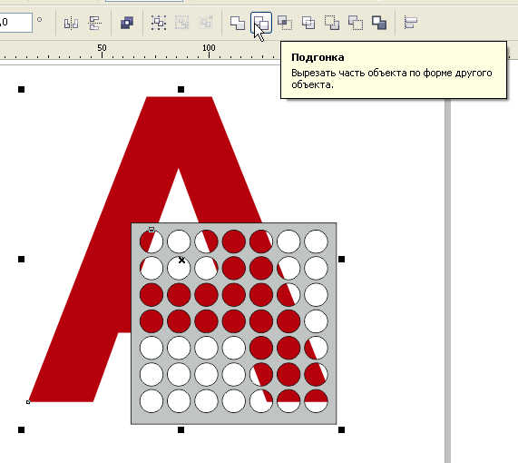

Помогите пожалуйста! кластеры!
Ist42Rus / 24.10.2012, 17:55/00:41
Форум:
Здравствуйте! мне нужно надпись (слово на вывеске) разбить на кластеры! кластеры как для светодиодов. то есть надпись разбивается в среднем на 2300 кластеров. как это сделать?
Нарисуй сетку с нужной ячейкой, можно воспользоваться к примеру "разлинованная бумага" или "таблица" ну или любым другим способом. Задай толщину линии, преобразуй абрис в объект. И этим порежь свое изображение. Делов то...
мне надо что ы изображения как такового не осталось, а только точечки вместо него
Да блин! Извините за выражение. Ну включи же мозги наконец. Я же тебе дал направление.
Точечки какой формы нужны? Круглые, квадратные, треугольные?
Создай объект нужной формы и размера размножь его например с помощью Упорядочить > Преобразование > Положение > (Количество копий). Ну или с помощью Ctrl+R.
Потом нарисуй вокруг этого прямоугольник, выдели все и объедини. Получишь маску с дырками. Вот этой маской и обрежь свое изображение. Вот и останутся "только точечки вместо него".
а как обрезать? я просто полный чайник..
Вот так например:

это Corel x6?
Да какая разница, в любой версии CorelDRAW функции обрезки присутствуют с эпохи динозавров.
нуб найти не могу :( но я ищу.. ищу...
подскажите еще, как облегчить корел? что бы он занимал меньше места в оперативке? и жрал соответственно меньше. и вообще, возможно ли это?
Оперативку жрет не корел, а файл и возможно всякая доп информация сохраняющаяся с файлом. Ты по сайту то хоть полазай найдешь много полезного.
Вот например: Решаем проблему цветовых стилей
Или вот (по твоему предыдущему вопросу): Объединение, пересечение, и другие функции...
Страницы